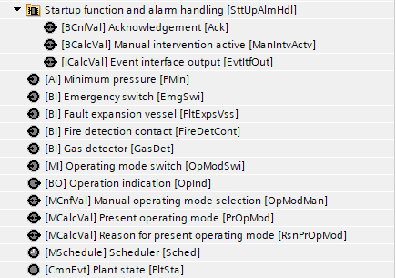
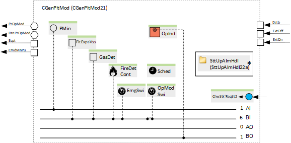
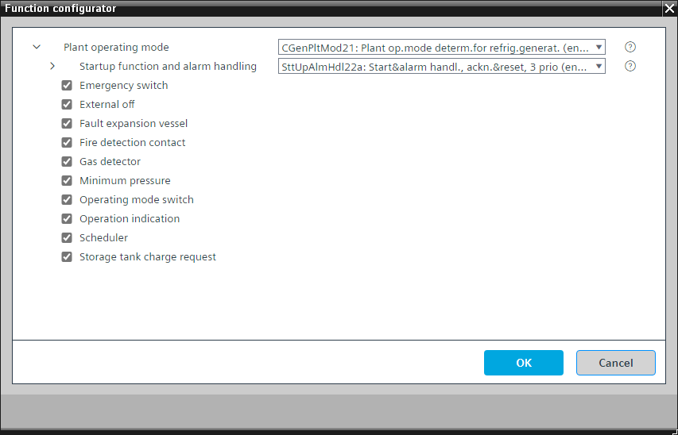

[CGenPltMod21] 制冷发电的工厂运行模式确定
Program block, name / node subtype: [CGenPltMod21] Plant operating mode determination for refrigeration generation
Library hierarchy: Cooling and refrigeration equipment
Family: CGenPltMod
项目树 | 图表 |
|---|---|
|
 |  *SttUpAlmHdl21a 在系统版本 < 1.5 的控制器中 |
Configurator


程序块存储在没有 I/Os. 的库中 使用auto-create and auto-connect函数创建 I/Os 和 /or 将它们连接到接口块，例如 R_A、CMD_B。或者，从包含库中预定义 I/Os 的文件夹中取出 I/Os，并从工厂中取出 /or，并将它们连接到接口块。
通过考虑各种可能的来源（例如调度程序、手动操作、房间单元）来确定工厂运行模式。
适用于配备热泵的工厂。
Possible operating modes
运行模式 | 描述 |
|---|---|
离开 | 所有聚合都关闭（热泵关闭）。 |
On | 所有聚合都已开启（热泵已开启）。 |
操作模式显示在 BACnet 上，具有多状态计算值“当前操作模式”，状态为“关闭”和“打开”。
程序中的一个参数被预设以防止设备运行。这对于测试数据点很有用。必须将其关闭才能启动设备。
"Startup function and alarm handling" controls the startup behavior of the plant after power-on.启动后有一个延迟，“DlySttUp”，大约 50 秒。 Do not change this delay.更改延迟“DlyOn”，以便每个工厂的延迟不同。这可确保工厂相继启动，并且不会使电气系统过载。还有来自工厂的所有故障和警报的收集和汇总。如果需要本地报警灯和/or 复位按钮，则可以选择替代方案。
该程序块具有以下可选功能：
Option: Emergency switch (1xBI)
读取紧急开关的信号，生成警报并停止工厂。
Option: External off
可连接到用于关闭工厂的程序逻辑的接口。
Option: Fault expansion vessel (1xBI)
读取来自膨胀容器控制单元的信号，生成警报，并停止工厂。
Option: Fire detection contact (1xBI)
读取来自火灾探测触点的信号，生成警报并停止设备。
Option: Gas detector (1xBI)
读取气体探测器的信号，生成警报并停止工厂。
Option: Minimum pressure (1xAI)
读取冷冻水中压力传感器的信号，并将其与报警下限进行比较。如果压力低于下限，则会发出警报并停止工厂。
Option: Operating mode switch (1xMI=2xBI)
读取操作模式开关的状态，通常位于电气面板的前面，状态为“自动”、“关闭”和“打开”。
Option: Operation indication (1xBO)
命令灯（通常为绿色），如果设备正在运行，则该灯亮起；如果正在进行切换操作，则该灯闪烁。
Option: Scheduler
类型为 MSCHED 的调度程序，其状态为“关闭”和“打开”，用于关闭和打开设备。
即使只有两个状态，这也是一个多状态调度程序（非二进制），如果项目需要，可以更轻松地扩展。
Option: Storage tank charge request
参数定义工厂对储罐充电请求的响应：
- Value = 0: The storage tank charge request starts the plant independent of other requests, e.g., request from the consumers collected over the supply chain function.
- Value = 1: The storage tank charge request starts the plant only if another request, e.g., request from the consumers collected over the supply chain function, is active.
如果没有收集消费者请求的供应链功能，则将该值设置为 0。
姓名 | 描述 | 类型 | 报警/通知类 | 趋势/类型 | |
|---|---|---|---|---|---|
OpModMan | Manual operating mode selection | MCnfVal: Multistate configuration value | N/A | 是的，4 | |
PrOpMod | Present operating mode | MCalcVal: Multistate calculated value | No | 是的，4 | |
RsnPrOpMod | Reason for present operating mode | MCalcVal: Multistate calculated value | No | 是的，4 | |
SttUpAlmHdl | Startup function and alarm handling | [SttUpAlmHdl22a] Startup & alarm handling, acknowledge & reset, 3 priorities | N/A | N/A | |
姓名 | 描述 | 类型 | 报警/通知类 | 趋势/类型 | |
|---|---|---|---|---|---|
OpModSwi | Operating mode switch | MI：多态输入 | No | 是的，4 | |
Sched | Scheduler | MSchedule: Multistate scheduler | N/A | N/A | |
OpInd | Operation indication | BO：二进制输出 | No | 是的，3 | |
EmgSwi | Emergency switch | BI：二进制输入 | 是的，4 | No | |
FireDetCont | Fire detection contact | BI：二进制输入 | 是的，4 | No | |
GasDet | Gas detector | BI：二进制输入 | 是的，4 | No | |
PMin | Minimum pressure | AI：模拟输入 | 是的，4 | 是的，3 | |
FltExpsVss | Fault expansion vessel | BI：二进制输入 | 是的，5 | No | |
描述 |
|---|
Storage tank charge request |
External off |